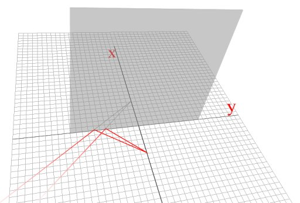
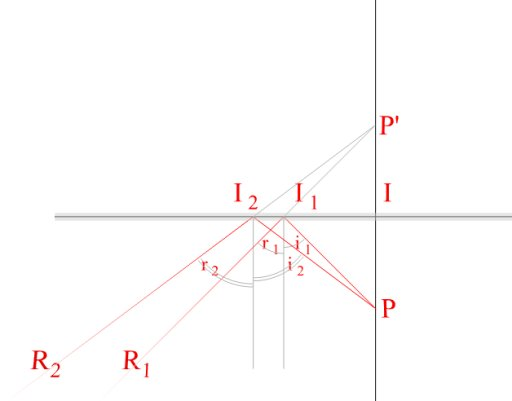
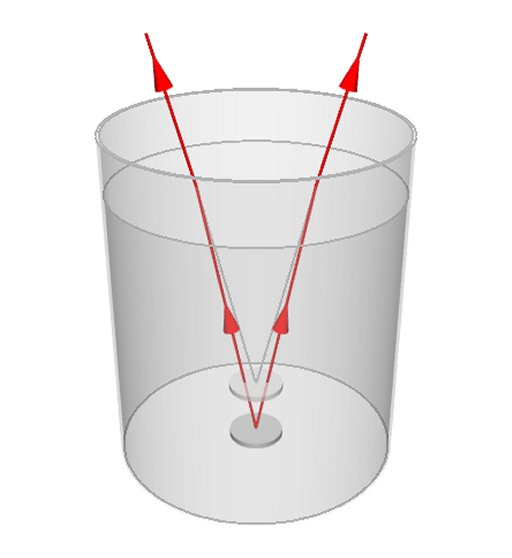
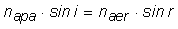
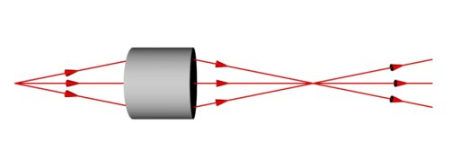

Formarea imaginilor
De la un detaliu al unui obiect pe care îl priveşti, lumina soseşte la ochii tăi ca un fascicul divergent. Locul din care porneşte acest fascicul
divergent este interpretat ca fiind locul în care se află obiectul.
Folosindu−ne de reflexie şi refracţie, putem schimba locul din care să pornească acest fascicul − acolo vom vedea imaginea obiectului!
 Activitatea experimentală 1
Activitatea experimentală 1
Investighează formarea imaginilor. Lucrează în echipă.
Pasul 1. Trasaţi pe o foaie cu pătrăţele două segmente perpendiculare, care se intersectează în zona centrală a foii. Notaţi−l pe unul x,
iar pe celălalt, y.
Pasul 2. Aşezaţi, în plan vertical, capacul transparent al unei casete de CD, cu o muchie în lungul segmentului y.
Pasul 3. Cineva dintre voi să aşeze vertical un creion, cu vârful pe segmentul x, la 1 cm de y. Priviţi aproape în lungul
planului capacului transparent. Observaţi unde este imaginea creionului.
Pasul 4. Repetaţi pasul 3 şi pentru alte distanţe faţă de y.
Capacul casetei de CD reflectă o parte din lumina incidentă pe acesta. Un fascicul divergent de lumină de la vârful creionului, se reflectă pe suprafaţa
capacului şi pare să sosească din cu totul altă parte (figura 1)!

Fig. 1.  Un fascicul divergent care se reflectă.
Un fascicul divergent care se reflectă.
Locul din care pare să pornească fasciculul reflectat este simetric faţă de suprafaţa pe care se reflectă (figura 2).

Fig. 2.
Originea aparentă a fasciculului reflectat este simetrică faţă de suprafaţa pe care se reflectă.
Prelungirile razelor reflectate I1R1, respectiv I2R2 se intersectează în P'.
Conform legilor reflexiei, i1 = r1 şi i2 = r2, astfel că
triunghiul PII1 este congruent cu P'II1, iar PII2 este congruent cu P'II2, toate
triunghiurile fiind dreptunghice în I.
Aşadar, P' este simetricul lui P faţă de suprafaţa reflectătoare.
Pentru că lumina nu soseşte de la P', ci doar pare să sosească de acolo, imaginea P' a punctului P este o imagine virtuală.

O suprafaţă plană pe care se reflectă lumina de la un obiect, formează o imagine virtuală a obiectului.
Fiecărui punct al obiectului îi corespunde un punct al imaginii, simetric faţă de suprafaţa reflectătoare.
Capacul de plastic al casetei de CD reflectă doar o mică parte din lumina incidentă pe acesta.
Metalele şlefuite au proprietatea remarcabilă de a reflecta cea mai mare parte a luminii incidente. Aluminiul bine şlefuit reflectă aproximativ 92% din
lumina incidentă, iar argintul chiar 98%!
Depunând un strat subţire de aluminiu sau argint pe un suport plan (o placă de sticlă sau plastic), se obţine o oglindă plană.
Imaginile formate într−o oglindă plană sunt aproape tot atât de luminoase ca şi obiectul însuşi!
Când îţi priveşti chipul în oglindă, obiectul eşti chiar tu! Dacă oglinda este plană, imaginea pe care o vezi este asemenea ţie, aflată simetric de partea
cealaltă a oglinzii, dreaptă şi egală cu obiectul.
Imaginea este virtuală − lumina nu provine din spatele peretelui pe care este pusă oglinda, ci doar pare că soseşte de acolo!
 Provocarea 1
Provocarea 1
Este foarte răspândită părerea că o oglindă inversează partea stângă cu cea dreaptă.
Când te priveşti în oglindă şi ridici mâna stângă, imaginea ta din oglindă "ridică" mâna dreaptă!
Oare aşa să fie?
Activitatea experimentală 2
Ţine orizontal, în faţa unei oglinzi, un creion ascuţit doar la unul dintre capete.
Observă imaginea creionului în oglindă. Este imaginea creionului inversată stânga−dreapta faţă de creion?
Imaginea într−o oglindă plană nu este inversată stânga−dreapta sau sus−jos în raport cu obiectul.
Când privim propria imagine în oglindă, suntem tentaţi să interpretăm că suntem faţă în faţă cu o persoană a cărei mână dreaptă este în partea noastră
stângă! De aceea, când ridici mâna stângă, interpretezi că imaginea din oglindă "ridică" mâna dreaptă.
Dacă te apropii de oglindă, imaginea "se apropie", deplasându−se astfel în sens contrar celui în care te mişti.
Imaginea într−o oglindă plană este inversată faţă−spate, în raport cu obiectul.
Activitatea experimentală 3
Investighează formarea imaginilor prin refracţie.
Pasul 1. Umple cu apă un vas cilindric cu fundul plat.
Pasul 2. Lasă să cadă o monedă pe fundul vasului. Pune alături de vas o monedă identică.
Pasul 3. Priveşte de deasupra vasului. Care monedă îţi pare a fi mai aproape de tine?
Lumina de la moneda cufundată în apă se refractă cnd trece din apă în aer (figura 3).

Fig. 3.
Refracţia luminii din apă în aer.
Conform legilor refracţiei, .
Deoarece napă > naer, fasciculul de lumină divergent, provenit de la un punct al monedei, devine şi mai
divergent în aer (r > i), ca şi când ar proveni dintr−un punct aflat mai aproape de suprafaţa apei!
Imaginea monedei este virtuală, pentru ca lumina nu provine din locul în care se formează această imagine.
Provocarea 2
Cum s−ar putea obţine o imagine reală a unui obiect, adică lumina să provină efectiv din locul în care se formeaza imaginea?
Fasciculul de lumină divergent, provenit de la un punct al obiectului, trebuie transformat cumva într−un fascicul convergent (figura 4).

Fig. 4.
Formarea unei imagini reale.
Punctul în care converge fasciculul este imaginea reală a punctului obiectului. Lumina diverge din acest punct−imagine ca şi când ar proveni de la
un obiect real!